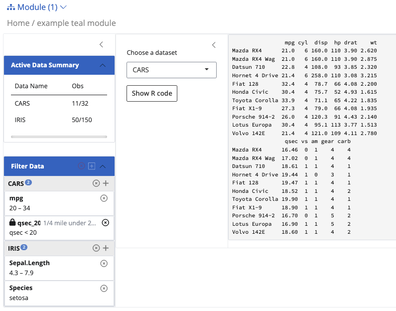

suppressPackageStartupMessages({
library(teal)
library(teal.modules.general)
library(teal.modules.clinical)
})Teal workshop preparation
teal
Topics related to data and filter
This is my notes on preparing the teal workshop. All the data used are simulated and public.
Topics
init()- data (
teal_dataobject) - filter (
teal_slicesobject) - UI modification
Data used in the workshop are:
- IRIS
tmc_ex_adsl,tmc_ex_adae(included in theteal.modules.clinicalpackage)
Get started
Load necessary libraries.
Working with data
Outline
- What is
teal_data - Ways to add data
- directly adding data object
- add data with
within()(pipe needs to be introduced)- code inside
- source from another script
- Interact with
teal_dataobject- extract object (
[[]],$) - examine column names
- extract object (
- Reproducibility
join_keys()
General usage
What is teal_data?
empty_teal_data <- teal_data()
class(empty_teal_data)[1] "teal_data"
attr(,"package")
[1] "teal.data"General usage
path <- 'data/cdisc/'
ADSL <- read.csv(file.path(path, 'adsl.csv'))
# create teal_data object
data <- teal_data(
ADSL = ADSL
)
# return data object
data✖ code unverified
<environment: 0x11432f678> 🔒
Parent: <environment: package:teal.modules.clinical>
Bindings:
- ADSL: [data.frame]Add another dataset, for example, ADAE
ADAE <- read.csv(file.path(path, 'adae.csv'))
# update teal_data object
data <- teal_data(
ADSL = ADSL,
ADAE = ADAE
)
data✖ code unverified
<environment: 0x14885d5c0> 🔒
Parent: <environment: package:teal.modules.clinical>
Bindings:
- ADAE: [data.frame]
- ADSL: [data.frame]Interacting with the object
names(data)[1] "ADAE" "ADSL"Extract one dataset, can use either [[]] or $
data$ADSL[1:6,1:6] # only print the first 6 rows and 6 columns STUDYID COUNTRY SITEID SUBJID AGE SEX
1 AB12345 CHN CHN-1 id-1 36.94418 M
2 AB12345 CHN CHN-11 id-2 39.82057 F
3 AB12345 USA USA-2 id-3 35.39604 F
4 AB12345 RUS RUS-1 id-4 30.54711 F
5 AB12345 CHN CHN-11 id-5 33.16138 M
6 AB12345 RUS RUS-2 id-6 47.65321 Fdata[['ADSL']][1:6,1:6] # need quotation! STUDYID COUNTRY SITEID SUBJID AGE SEX
1 AB12345 CHN CHN-1 id-1 36.94418 M
2 AB12345 CHN CHN-11 id-2 39.82057 F
3 AB12345 USA USA-2 id-3 35.39604 F
4 AB12345 RUS RUS-1 id-4 30.54711 F
5 AB12345 CHN CHN-11 id-5 33.16138 M
6 AB12345 RUS RUS-2 id-6 47.65321 FExplore individual dataset: the approach is similar to an ordinary dataframe. For exmaple, to get the column names, can use this syntax:
names(data[['ADSL']]) # colnames() will also work [1] "STUDYID" "COUNTRY" "SITEID" "SUBJID" "AGE" "SEX"
[7] "ARMCD" "ARM" "ACTARMCD" "ACTARM" "RACE" "TRTSDTM"
[13] "TRTEDTM" "EOSDY" "EOSDT" "STRATA1" "STRATA2" "BMRKR1"
[19] "BMRKR2" "REGION1" "SAFFL" "USUBJID" "EOSSTT" "EOTSTT"
[25] "DCSREAS" "DTHDT" Reproducibility
In teal_data, you can also include code that has produced the object. However, you still need to run the code outside this object!
data <- teal_data(
ADSL = ADSL,
ADAE = ADAE,
code = '
path <- "data/cdisc"
ADSL <- read.csv(file.path(path, "adsl.csv"))
ADAE <- read.csv(file.path(path, "adae.csv"))
'
)
get_code(data)[1] "\n path <- \"data/cdisc\"\n ADSL <- read.csv(file.path(path, \"adsl.csv\"))\n ADAE <- read.csv(file.path(path, \"adae.csv\"))\n "Join keys for CDISC data

join_keys(data)An empty join_keys object. There is no relationship between these two datasets, hence the filtering does not affect one another.
More on join_keys()
Set up primary and foreign keys
default_cdisc_join_keys[c("ADSL", "ADAE")] # Subset for ADSL and ADAEA join_keys object containing foreign keys between 2 datasets:
ADSL: [STUDYID, USUBJID]
<-- ADAE: [STUDYID, USUBJID]
ADAE: [STUDYID, USUBJID, ASTDTM, AETERM, AESEQ]
--> ADSL: [STUDYID, USUBJID] Instead of using teal_data(), cdisc_data() automatcially sets the key.
data <- cdisc_data(
ADSL = ADSL,
ADAE = ADAE
)
# check join_keys again
join_keys(data)A join_keys object containing foreign keys between 2 datasets:
ADSL: [STUDYID, USUBJID]
<-- ADAE: [STUDYID, USUBJID]
ADAE: [STUDYID, USUBJID, ASTDTM, AETERM, AESEQ]
--> ADSL: [STUDYID, USUBJID] 
Process data: within()
data <- teal_data() |>
within({
path <- "data/cdisc"
ADSL <- read.csv(file.path(path, "adsl.csv"))
ADAE <- read.csv(file.path(path, "adae.csv"))
})
data✅︎ code verified
<environment: 0x112927468> 🔒
Parent: <environment: package:teal.modules.clinical>
Bindings:
- ADAE: [data.frame]
- ADSL: [data.frame]
- path: [character]Note that there are three binding rather than two. You can access the data in the same way ([[]] or $).
data$path[1] "data/cdisc"Read from another R script:
Create a separate script (preprocess.R) with the code where you read in the data, then source it.
data <- teal_data() |>
within(code, code = parse(text = readLines("demo_script/preprocess.R")))
data✅︎ code verified
<environment: 0x11427e280> 🔒
Parent: <environment: package:teal.modules.clinical>
Bindings:
- ADAE: [data.frame]
- ADSL: [data.frame]
- path: [character]join_keys() revisited
Distinguish join_key and join_keys!
Assign join_keys() with default cdisc keys
Filters
Topics
- How to set a filter
- Difference between different filters (anchored, fixed, custom expressions)
- Use for
id - Module specific filters
Resources
- Teal documentation: filter panel
Difference between teal_slice and teal_slices: the former is in teal.slices package, while the later is in teal package - as a function to wrap individual ts objects.
By default, init() initializes the fitler panel without any active filters. User can add filter on any column.
To start an app with predefined filters, one must specify the filter argument, wrapped around teal_slices(). Example:
app <- init(
data = teal_data(IRIS = iris, CARS = mtcars),
modules = example_module(),
filter = teal_slices(
teal_slice(dataname = "IRIS", varname = "Sepal.Length"),
teal_slice(dataname = "IRIS", varname = "Species", selected = "setosa"),
teal_slice(dataname = "CARS", varname = "mpg", selected = c(20, Inf)),
teal_slice(dataname = "CARS", expr = "qsec < 20", title = "1/4 mile under 20 sec", id = "qsec_20")
)
)A few things to notice here in the filter panel:
- you can create multiple filters on each dataset. You need to link the filter with the data name inside the
teal_dataobject. - Required arguments are
datanameandvarname(if you are not using custom expression). - For
selectedargument, if you don’t specify anything, the default will be the entire range. Distinguish between continuous variable and discrete.

Fixed, anchored and custom expressions
f1 <- teal_slice(
dataname = 'IRIS',
varname = 'Sepal.Length',
selected = 'setosa'
)
f1{
"dataname" : "IRIS",
"varname" : "Sepal.Length",
"id" : "IRIS Sepal.Length",
"selected" : ["setosa"],
"fixed" : false,
"anchored" : false,
"multiple" : true
}- Fixed: forbid settings state
- anchored: forbid removing and inactivating
If using custom expressions, must have id. Otherwise id is automatically set to be dataname - varname.
This expression must be a valid R expression which can be evaluated in the dataset.